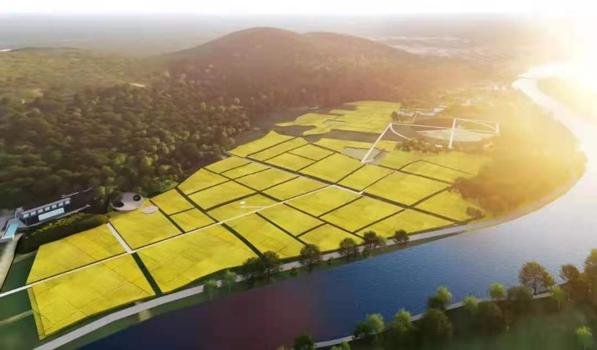
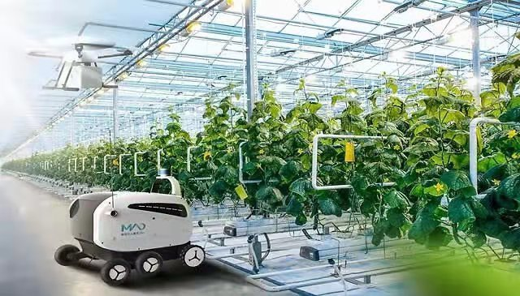
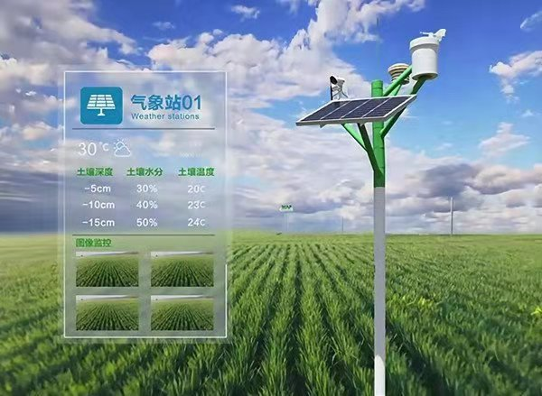

关于我们ABOUT US

项目背景
农业是以土地资源为生产对象的部门，属于第一产业，在中国经济中发挥着重要作用。根据国家统计局定义，农业指种植业，即庄稼种植，包括粮食作物、经济作物等的生产活动。
中国农业的稳定增长得益于科技的不断进步。2019年农业科技进步贡献率达到59.2%，高于2018年的57.5%。全国农作物耕种收综合机械化率超过70%，主要农作物自主选育品种提高到95%以上，这是我国大力推进科教兴农取得的显著成效，是我国在生物种业、重型农机、智慧农业、绿色投入品等领域自主创新的结果。
同时，我国农业供给侧改革不断深化，农业绿色发展取得实效，产地环境逐步改善，化肥农药减量增效，“藏粮于地、藏粮于技”的发展战略得到有力推进。

项目概况
项目名称：泰瑞5G智慧农业平台项目；
项目简介：项目方经过长期市场调查、凭借多年的农业行业从业经验积累，现已结合种养殖基地、合作社需求，打造了一套中高端定制型的以上游合作方及下游客户为服务对象，以跨省、跨区域为主要场景，以上下游电子交易为核心，以农业线上租地种植、农业认养、农业电商、物联网、监控实时直播、多种营销功能和资金管理等业务融为一体的全流程电子商务平台（智慧农场）。平台突出订单农业及可视化农业服务优势，利用先进技术形成产品溯源，在帮助农民创收、新农人创业投资的同时解决农业企业产品滞销且流动资金少、农产品鱼龙混杂等行业痛点，可有效对农产品质量进行监督把控，令消费者放心。
商业模式：项目方计划在为上游合作方与下游客户搭建对接渠道的过程中坚持准确定位，突出平台渠道、系统及服务特色，深度契合双方需求，为项目的发展提供源源不断的驱动力，形成独家品牌，在上下游之间产生口碑式传播，形成项目独有的“定向思维标签”。
切入点：项目方以农产品溯源、可视化农业及订单农业为切入点，满足客户对于农产品质量越来越高的需求，以最快的方式进行平台引流和用户粘性培养，保障平台后期营收，为后续合作方拓展和市场拓展打下良好的服务基础和用户流量基础。
项目核心：利用初期“智慧农业+服务+技术+订单农业”下行的模式，同步结合农产品上行模式，利用已有的智慧农业管理系统进行监管，逐步形成农业产业链。
项目现状：项目方负责人已对项目发展契机、市场定位、营销策略、运营模式、盈利模式、预期目标以及相关风险等都已经过深入的思考与规划。
投入资金：项目已启动9个月，现已投入资金3000余万元，用于建设仓储（现拥有库存140万斤五常大米）、可视设备投入、团队建设及技术搭建；
平台：项目方采用外包的形式进行平台搭建，平台现已搭建完成，可对外运营；项目方后期将组建技术团队负责后期平台的开发及完善；
合作方：（1）上游合作方：五常市稷优源水稻种植专业合作社、广州美辰控股集团、温州观火熊养殖基地；（2）战略合作方：奥康集团、CCTV7、香港麒麟卫视、福建电视台、中国明星书法院等。

项目优势
模式优势：建立“快速低成本”产品/服务销售电商渠道，短时间内增加双方交易量及交易额；
利用租地种植、农业认养等方式有效解决传统线下农产品滞销、推广宣传成本高、投产比例失衡的痛点及资金短缺等问题；
有效解决农产品上行困难、农产品质量无保证及农产品溯源难追踪等问题；
农产品种养殖服务全流程透明化、可视化、公开化，最大程度保证产品质量，解决农业市场混乱、农产品良莠不齐、品牌产品窜货等痛点，保证消费者权益。
全渠道营销优势：高效营销、将产业链上下游溶于一体，实现客户与上游合作方之间业务快速。
项目价值：利用多源数据信息，指导农业生产主体科学种植，利用现代人工智能、物联网等先进技术进行精细化养殖、生长环境监测、形成产品溯源，保证消费者权益。
模式新颖：项目方以B2B/2C业务模式为发展重点，利用租地种植、农业认养、订单农业等新型业务模式，可视化农业、农产品追溯等智能系统实现智慧农业产业链的初步构建，无须担心市场拓展缓慢、终端客户少等问题；平台可实现全方位定制化产品、技术及服务覆盖。此模式新颖可靠、风险相对较低，可最大程度降低项目风险；